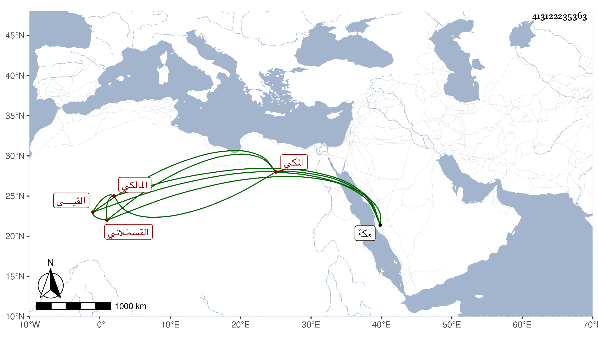

0902Sakhawi.DawLamic.ITO20230111-ara1.EIS1600.413122235363
Biography ID: 413122235363
12
محمد بن الجمال محمد بن أحمد بن أحمد بن الضياء محمد بن التقي عمر بن محمد بن عمر بن الحسن بن عبد الله بن أحمد بن ميمون القيسي القسطلاني المكي المالكي ، أمه سعدى المغربية مستولدة الشهاب بن ظهيرة أم ولده أبي عبد الله . سمع في سنة ثلاث وتسعين وسبعمائة من فاطمة ابنة أحمد بن قاسم الحرازي بعض المصابيح ، وأجاز له في سنة ثمان وثمانين النشاوري وابن الميلق والعراقي والهيثمي والابناسي وآخرون . مات بمكة قبل الثلاثين بعسر البول والحصى مع معالجته بأنواع .
